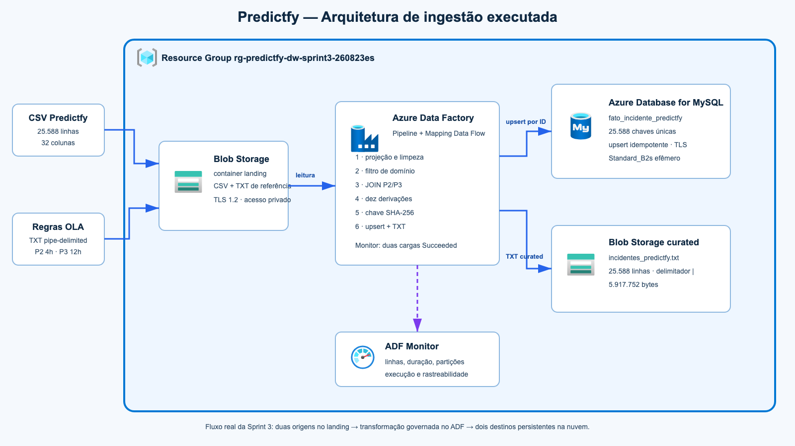
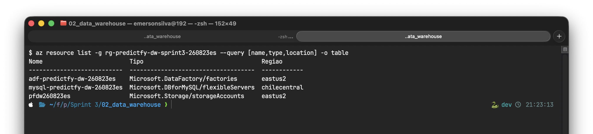
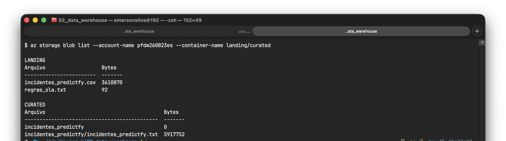
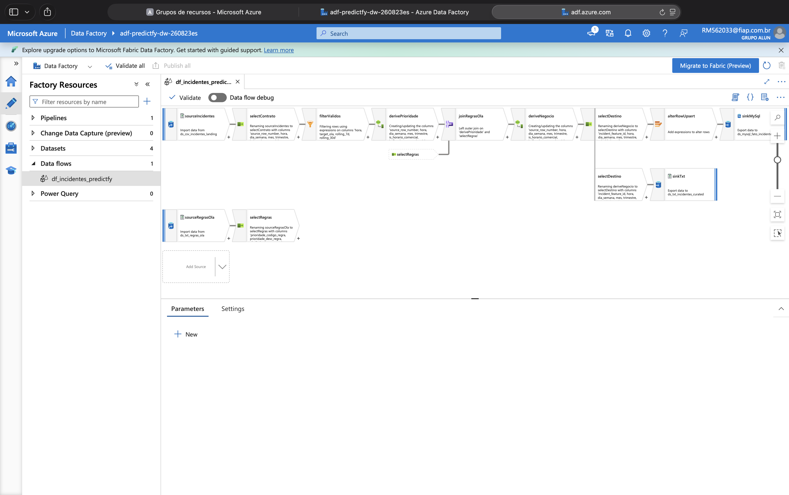
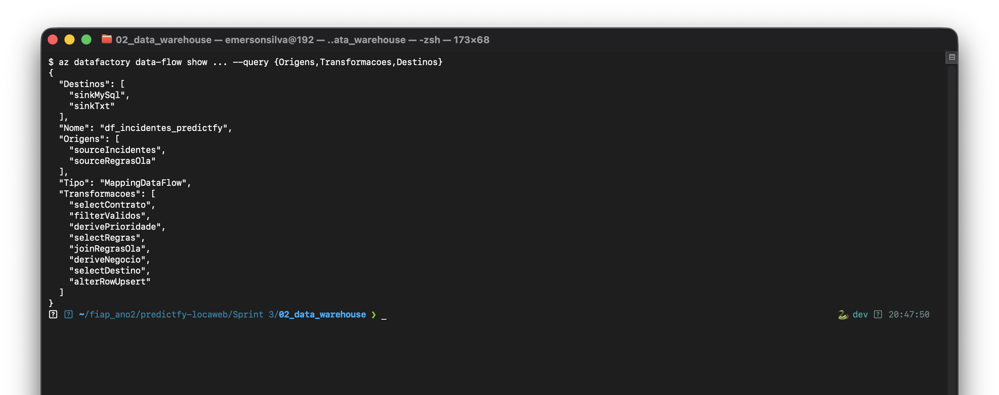
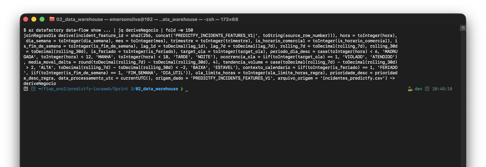
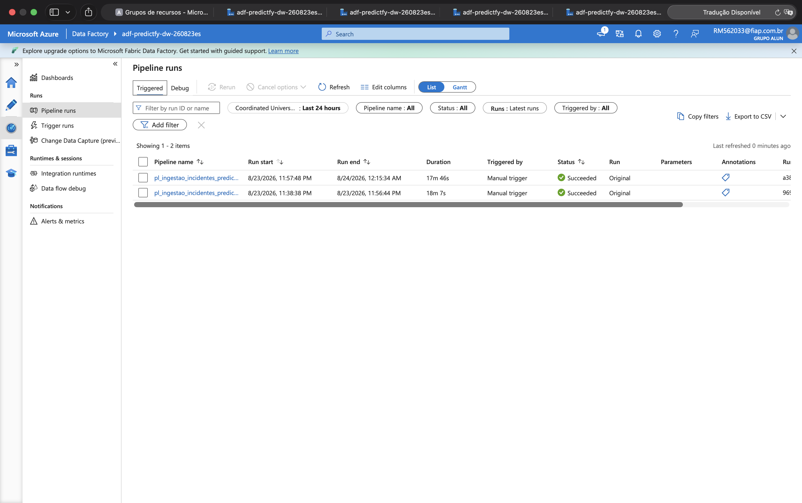
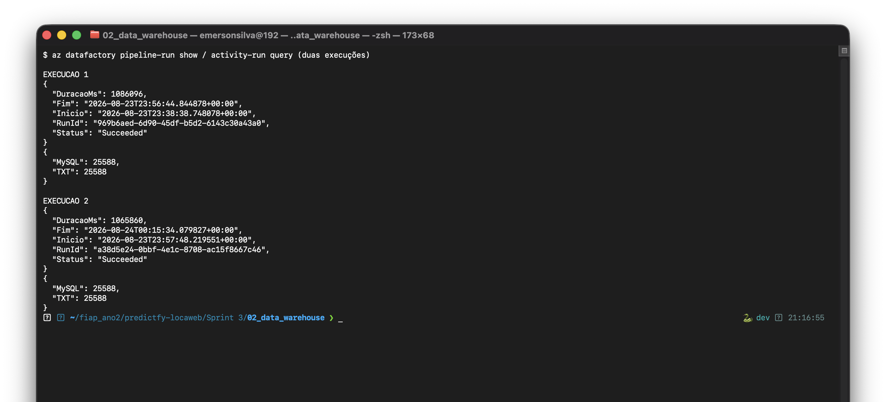
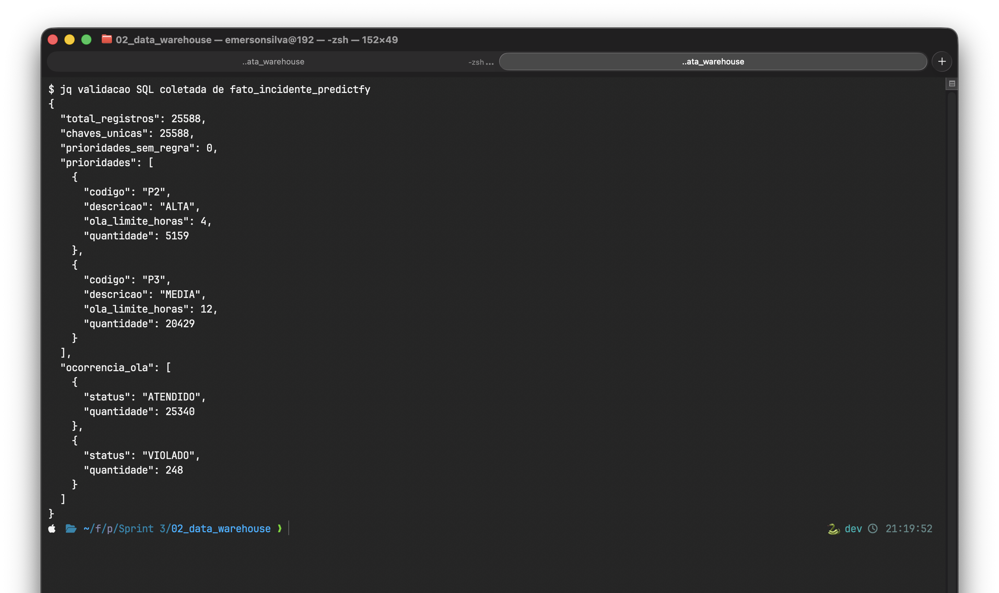
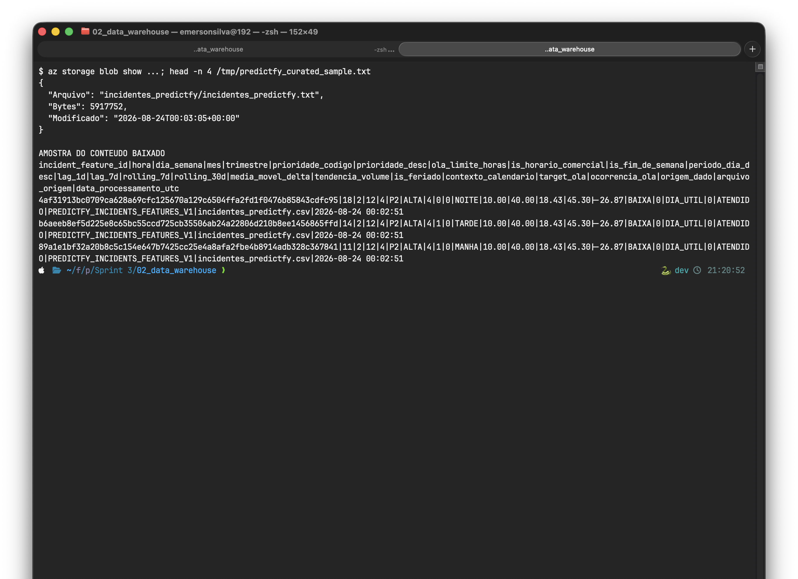

Azure Data Factory · Mapping Data Flow · MySQL · Blob Storage · ETL auditável
Grupo: Predictfy · Turma: 2TSCPW
| Integrante | RM |
|---|---|
| Elton Vinicios Almeida de Oliveira | 562187 |
| Emerson dos Santos Silva | 562033 |
| Kelvin Douglas Ribeiro Rabelo | 561538 |
| Pedro Henrique Simão Soares | 562283 |
| Vitor Lucas Mattos de Brito Mariano | 562116 |
Objetivo: integrar a matriz histórica de features de incidentes Predictfy com regras de OLA, transformar e enriquecer os registros no Azure Data Factory e persistir o mesmo contrato analítico em MySQL e TXT.

O Blob Storage funciona como Stage Area. O Mapping Data Flow é a única fronteira de transformação, evitando divergência lógica entre os dois sinks. O ADF Monitor registra status, duração, leitura e escrita.

| Serviço | Configuração executada |
|---|---|
| ADF e Storage | East US 2 · TLS 1.2 · identidade gerenciada |
| MySQL Flexible Server | Chile Central · MySQL 8.0.21 · Standard_B2s temporário |
| Containers | landing e curated · acesso público desabilitado |

az resource list -g rg-predictfy-dw-sprint3-260823es --query "[].{Nome:name,Tipo:type,Regiao:location}" -o tableO que faz: Lista os recursos efetivamente existentes no Resource Group.
O que comprova: Requisito 2 — infraestrutura PaaS.
az storage blob list --account-name pfdw260823es -c landing/curated -o tableO que faz: Lista os objetos persistidos nos containers de entrada e saída.
O que comprova: Requisitos 2 e 5 — Stage Area e TXT curated.


O fluxo projeta o contrato necessário, valida hora/target/médias móveis, traduz prioridade, faz JOIN com duas regras OLA e cria atributos operacionais. Somente o ramo MySQL passa por Alter Row para o upsert por SHA-256; o ramo TXT parte diretamente de selectDestino.
az datafactory data-flow show -g rg-predictfy-dw-sprint3-260823es --factory-name adf-predictfy-dw-260823es -n df_incidentes_predictfyO que faz: Consulta no Azure o Mapping Data Flow publicado e seus componentes.
O que comprova: Requisito 3 — Data Flow publicado e descrito.

| Derivação | Significado |
|---|---|
| incident_feature_id | chave determinística para idempotência |
| prioridade_codigo/desc | tradução do binário e enriquecimento pelo TXT |
| periodo_dia_desc | faixa operacional da hora |
| ocorrencia_ola | resultado histórico, não previsão |
| media_movel_delta/tendencia_volume | diferença 7d–30d e classificação |
| contexto_calendario | feriado, fim de semana ou dia útil |
| data_processamento/origem/arquivo | linhagem e auditoria |
az datafactory data-flow show ... | jq -r ".properties.scriptLines[] | select(endswith("~> deriveNegocio"))"O que faz: Extrai diretamente do artefato publicado a expressão de colunas derivadas.
O que comprova: Requisito 4 — derivações executadas e documentadas.




az datafactory pipeline-run show ...; az datafactory activity-run query-by-pipeline-run ...O que faz: Consulta status, duração e métricas de escrita das duas execuções.
O que comprova: Requisito 5 — pipeline Succeeded e 25.588 linhas por destino.
python3 scripts/collect_evidence.py; jq "{total_registros,chaves_unicas,prioridades_sem_regra}" evidencias/azure/13_mysql_validacao.jsonO que faz: Executa as consultas SQL sanitizadas e apresenta contagem, unicidade e cobertura das regras OLA.
O que comprova: Requisito 5 — persistência e idempotência no MySQL.
az storage blob show ... incidentes_predictfy.txt; head -n 4 /tmp/predictfy_curated_sample.txtO que faz: Confirma tamanho e data do blob e mostra o cabeçalho e registros reais.
O que comprova: Requisito 5 — TXT persistido com colunas derivadas.
O desafio materializou um fluxo ETL completo e reproduzível. Os principais aprendizados foram parametrizar linked services com segurança, declarar projeções para o grafo Spark e distinguir funções do ADF das funções SQL. Para melhorar o desempenho do TXT de arquivo único, o upsert foi ajustado para batch de 10.000 e oito partições por hash. O resultado mantém rastreabilidade, separa landing de curated e comprova consistência entre MySQL e TXT.